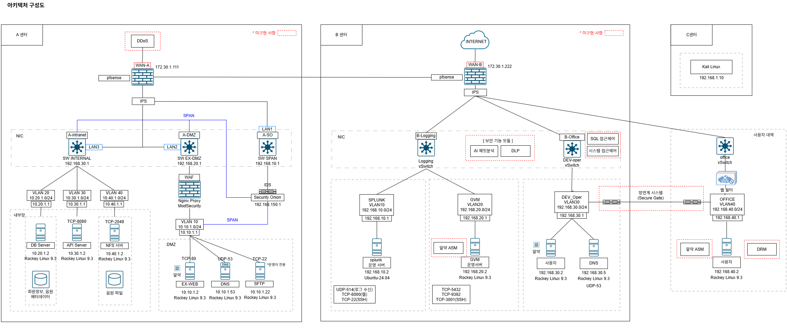

●
프로젝트 결과물
웹 서비스 UI
회원가입/로그인, 음악 검색, 재생, 다운로드 기능 구현 실제 음원 파일은 NFS 서버를 통해 제공

아키텍처 설계
메인 서비스 운영 센터 (A센터) / 로그 관리 센터 (B센터)

A센터
- WEB·WAS·DB 서버를 분리해 성능과 보안 강화
- 네트워크는 Intranet / DMZ / SO 3계층 구성
- Intranet : 내부 전용, 안정성 보장
- DMZ : 외부 접근 격리, 위협 차단
- SO(Security Onion) : 보안 모니터링·트래픽 분석
B센터
- 로그 수집 및 취약점 관리로 보안 이벤트를 중앙에서 관리
- 외부 사용자 접속 제어 및 안전한 접근 통로 확보
- Logging / Dev-oper / Office의 NIC로 구성
- Logging: 로그·보안 데이터를 안전하게 저장하고 네트워크를 모니터링해 위협을 탐지
- Dev-oper (Admin): 네트워크 중앙 관리 영역으로 A센터 자원 접근 권한 보유, 외부와 연결되는 유일한 통로
- Office: 외부 사용자는 Dev-oper를 통해 내부에 접근하며 안전한 외부 접속을 제공